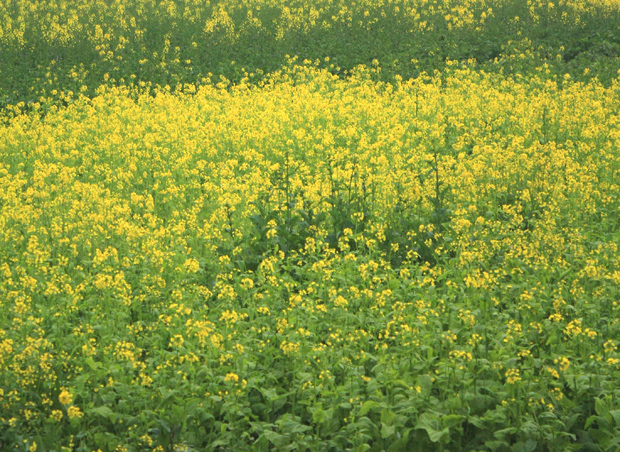
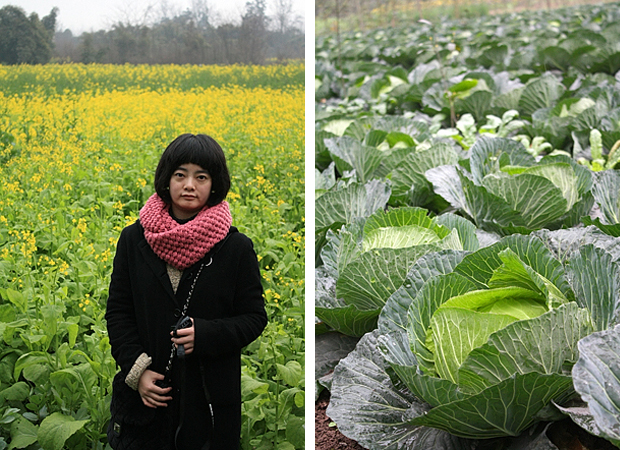

4岁的时候，在老家河对岸的油菜花地里头疯耍，戴着顶橘色的小圆布帽子，手里还拽着一大把说不清名字的花花草草，都是在乡下路边摘的。那时候的我觉得一大片黄灿灿的油菜花真好看呐。 小学毕业那会，流行写同学录，每个人一页，有些还贴了照片，照片底下是模仿当时介绍明星的手法，要求填一大堆“最喜欢”，有一项是最喜欢的颜色，我写的是黄色，还有项最喜欢的花，我写的是油菜花。 中学记不清哪一年了，做过一个梦，梦见自己住在乡下一间小木屋里，木屋有点漏风，也漏阳光，推开门，看到外面是一大片黄灿灿的油菜花地，然后镜头拉远，一整片油菜花地里就只有我那座孤单的小木屋了。之所以记得这么清楚，是因为后来还根据这个梦的场景写了篇作文，情节很像那些三流的言情电视剧，结尾就是小木屋在一大片油菜花地里的场景，你也可以把油菜花换成薰衣草，或者向日葵，甚至樱花，一定都似曾相识。
给我们网站想名字的时候，本来coletree是他的网名，但一查词典，发现cole是油菜的意思，很丢人我这个英语专八的人也不知道cole有这个意思，就硬生生地把coletree变成了Cole&Tree,留下个Tree给他当，把Cole给了自己。后来又发现cole这个油菜是北方人经常吃的那种小油菜，不是油菜花的那种油菜。哎，此油菜非彼油菜啊，中文真是复杂。至于油菜花的那个油菜，英文比较敏感词，就不提了。 后来听说婺源的油菜花是最好看的，但一直没有机会去。好吧，说没时间那是借口。我还是相信一定有比婺源更美人也少的地方。1月、2月油菜花在北回归线附近开放，3月四川和南岭还有武夷山以北的油菜花就开了，4月5月到江浙沿海一带，6月更往北，塔克拉玛干盆地和准噶尔盆地周围绿洲上的油菜花也开了，7月8月还想看油菜花，可以去青海湖，黄河谷地和雅鲁藏布江谷地，这样看来，要专门花钱才能看的油菜花还是让我一时有些难以接受。 记不清有多久没看过油菜花了，菜市上见过的不算，所以在过年回家从成都到乐山高速公路上突然看到路边一大片一大片油菜花的时候，真是有些小激动。但在高速上不方便停下来，幸好后来去了几趟乡下，也算是了却了我的一桩心愿。

